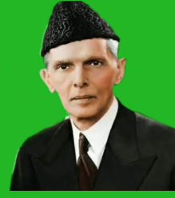

Quaid-e-Azam

About the legend
- Jinnah is the founding father of Pakistan, leading the nation to independence in 1947.
- He was a successful barrister before entering politics.
- Jinnah championed religious freedom and minority rights.
- He presented the famous "Fourteen Points" outlining Muslim demands in British India.
- Jinnah was a skilled negotiator in discussions with the British government.
- He's revered as a national hero and symbol of Pakistan's independence.
- His vision and principles continue to inspire Pakistan and the world.
- He promoted unity among Muslims from various ethnic and linguistic backgrounds to achieve a common goal.
- Jinnah advocated for a secular state where religion and politics would be separate, ensuring equal rights for all citizens.
- Jinnah became Pakistan's first Governor-General, holding the highest office in the new nation.
- Jinnah is widely respected for his unwavering commitment to the cause of Pakistan and his leadership during a critical period in South Asian history.
- Jinnah emphasized the importance of education for the development of individuals and the progress of the nation.
- He was often seen in his distinctive attire, which included a suit, tie, and distinctive headgear, contributing to his iconic image.
- Quaid-e-Azam Jinnah is recognized internationally for his role in the peaceful transition of British India into the sovereign nations of India and Pakistan, setting a precedent for decolonization worldwide.
- He was a visionary statesman who articulated the principles upon which Pakistan was founded, including democracy, justice, and equality.
- He passed away on September 11, 1948. His mausoleum in Karachi, Pakistan, is a national monument and a place of reverence.
- Jinnah was the leader of the All-India Muslim League, a political party that played a crucial role in the creation of Pakistan.
For more information, check Quaid-e-Azam on wikipedia.